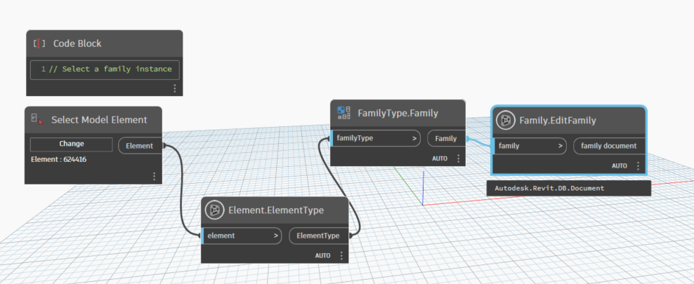
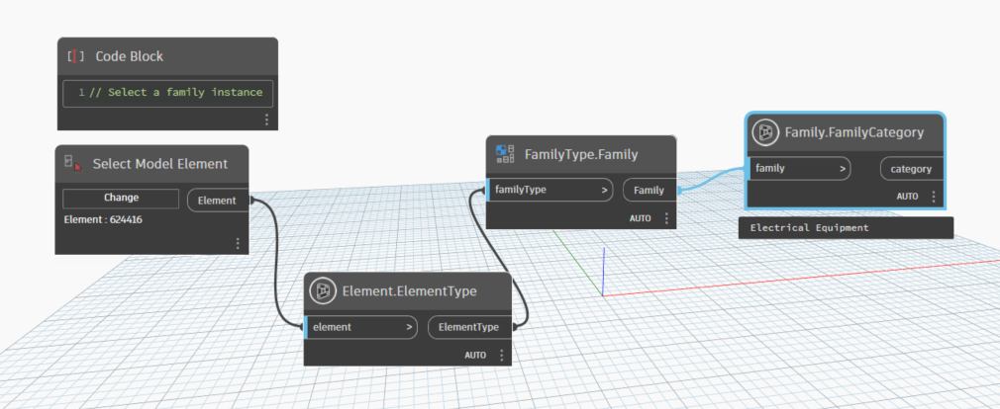

Class Family
An element that represents a custom family (not a system family) in Autodesk Revit.
public class Family- Inheritance
-
Family
- Inherited Members
Remarks
Custom families within the Revit API represented by three objects - Family, Autodesk.Revit.DB.FamilySymbol and Autodesk.Revit.DB.FamilyInstance. Each object plays a significant part in the structure of families. The Family element represents the entire family that consists of a collection of types, such as an 'I Beam'. You can think of that object as representing the entire family file. The Family object contains a number of Autodesk.Revit.DB.FamilySymbol elements. The Autodesk.Revit.DB.FamilySymbol object represents a specific set of family settings within that Family and represents what is known in the Revit user interface as a Type, such as 'W14x32'. The Autodesk.Revit.DB.FamilyInstance object represents an actual instance of that type placed the Autodesk Revit project. For example the Autodesk.Revit.DB.FamilyInstance would be a single instance of a W14x32 column within the project.
Methods
EditFamily(Family)
return family document
public static Document EditFamily(Family family)Parameters
familyFamilyfamily
Returns
- Document
family document
Examples

FamilyCategory(Family?)
Retrieves or sets a Category object that represents the category or sub category in which the elements ( this family could generate ) reside. All category objects can be retrieved from the application by using the Categories property of the Application.Settings object.
public static Category? FamilyCategory(Family? family)Parameters
familyFamilyfamily
Returns
- Category
category
Examples

IsOwnerFamily(Family?)
True if the family is the owner family for its own editable document, false otherwise.
[NodeCategory("Query")]
public static bool? IsOwnerFamily(Family? family)Parameters
familyFamilyfamily
Returns
- bool?
result
Examples